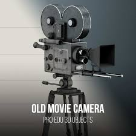
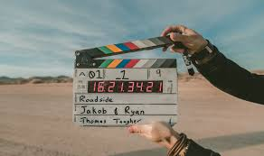
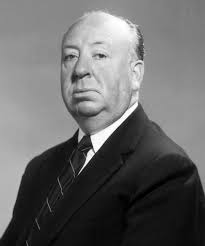
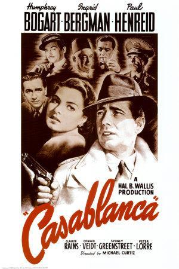

Movies and Cinema and Film
Written and Created by Chat GPT & Spencer Hamilton
Check out the 250 top films to see 250 films that some people say are the top ones.
Cinema is a medium of storytelling that transcends time and culture, capturing the imaginations of audiences for over a century. The debate over the "best movies of all time" is a subjective one, yet certain films have cemented their legacy due to their groundbreaking storytelling, technical achievements, and cultural impact. From timeless classics like Citizen Kane to modern masterpieces such as The Shawshank Redemption, these films not only define their eras but also resonate across generations.
Orson Welles' Citizen Kane (1941) often tops lists of the greatest films ever made. It revolutionized filmmaking with its innovative use of deep focus, non-linear storytelling, and complex character development. The story of Charles Foster Kane is a tragic exploration of ambition and isolation, made all the more poignant by Welles’ masterful direction and performance. Its influence on the art of cinema is unparalleled, shaping the visual and narrative techniques used in films to this day.
On the other hand, The Godfather (1972) by Francis Ford Coppola is a quintessential example of American cinema’s golden age. This epic saga of the Corleone crime family is more than a tale of organized crime—it is a nuanced exploration of family, power, and morality. Marlon Brando’s iconic portrayal of Don Vito Corleone and Al Pacino’s transformation into the reluctant Michael Corleone are performances that continue to captivate audiences. The film's themes and cinematic craftsmanship make it a cornerstone of film history.
Another modern classic, The Shawshank Redemption (1994), has gained a near-mythic status among moviegoers. Directed by Frank Darabont and based on a Stephen King novella, this tale of hope and friendship set within the confines of a prison is both heart-wrenching and uplifting. Tim Robbins and Morgan Freeman deliver unforgettable performances, and its themes of perseverance and redemption have universal appeal. Despite its modest box office performance upon release, it has become a beloved favorite through word of mouth and repeated television airings.
For those who appreciate groundbreaking visuals and innovative storytelling, 2001: A Space Odyssey (1968) by Stanley Kubrick remains an unparalleled achievement. This science fiction epic combines philosophical depth with stunning visual effects that were decades ahead of their time. From its iconic use of classical music to the enigmatic presence of the monolith, the film is as much a sensory experience as it is a narrative one. Kubrick’s vision has inspired countless filmmakers and solidified the movie’s place in cinematic history.
International cinema has also delivered masterpieces that stand shoulder to shoulder with Hollywood’s finest. Akira Kurosawa’s Seven Samurai (1954) is a landmark in world cinema, blending action, drama, and philosophical depth in a tale of heroism and sacrifice. Its influence can be seen in films like The Magnificent Seven and countless other ensemble action narratives. Kurosawa’s masterful direction and ability to convey universal themes make it an enduring favorite among cinephiles.
Finally, no discussion of the best movies would be complete without mentioning Schindler’s List (1993). Steven Spielberg’s harrowing account of the Holocaust is both a historical document and a deeply emotional narrative. Liam Neeson’s portrayal of Oskar Schindler, a man who saves over a thousand Jews during World War II, is deeply moving, while Ralph Fiennes’ chilling performance as the sadistic Amon Goeth adds a powerful counterpoint. The film's stark black-and-white cinematography and poignant storytelling make it a cornerstone of cinematic excellence.
In conclusion, the "best movies of all time" reflect a diversity of genres, styles, and perspectives. Whether through the groundbreaking techniques of Citizen Kane, the emotional resonance of The Shawshank Redemption, or the global impact of Seven Samurai, these films have left an indelible mark on the art of cinema. They are not merely stories on the screen but profound explorations of the human condition, ensuring their place in the pantheon of greatness for generations to come.
More Notable Films
- The Lord of the Rings - Peter Jackson
- The Fellowship of the Ring
- The Two Towers
- The Return of the King
- Apacolyplse Now - Francis Ford Coppola
- 12 Angry Men - Sydney Lumet